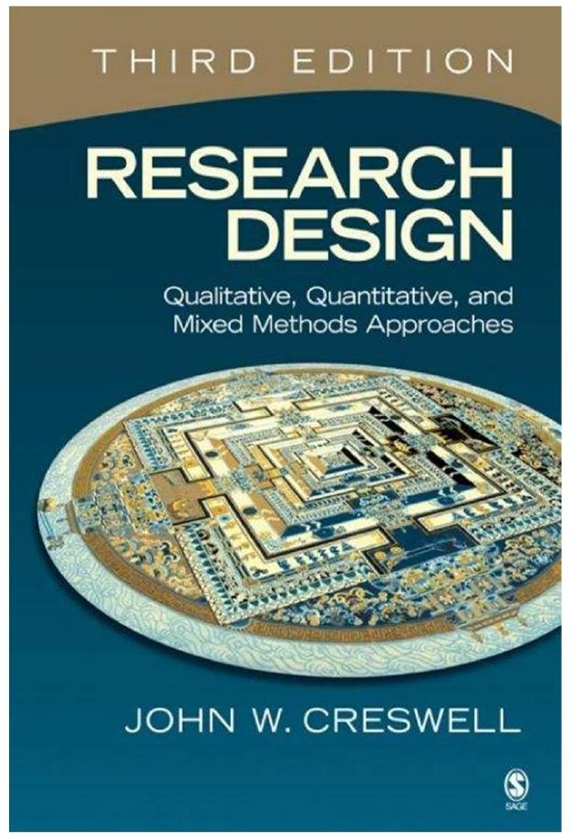

CLOUD SYNC
輸入 Email 後，我們會寄送安全登入連結。使用同一個 Email 登入其他裝置，即可取得最新筆記。
COURSE COLLECTION

下一本文獻
Qualitative, Quantitative, and Mixed Methods Approaches
文獻資訊保存在此瀏覽器；章節筆記登入後會同步。
READING NOTES
選擇章節，開始閱讀與記錄。
The Selection of a Research Design